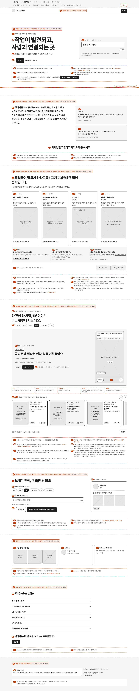

목차 · 14개 절
한 결로 묶던 시즌을 편마다 다른 메시지와 반전으로 풀었어요
저녁 판 EP2~EP6은 소재만 달랐어요. 다섯 편 모두 '다 안 된 것도 가치 있다'를 조금씩 바꿔 말했어요. 그래서 이번에는 소재가 아니라 메시지를 통째로 바꿨어요. 고딘 말대로 보라색 소는 "you'd notice it for a while", 잠깐만 눈에 띄어요. 한 결로 묶으면 첫 편 뒤로 보라색이 바래요.
| 무엇 | 저녁 판 | 이번 판 |
|---|---|---|
| 메시지 | 시즌 전체가 '버릴 것 없다' 하나 | 편마다 하나. '버릴 것 없다'는 EP1만 맡아요 |
| 주인공의 작업 | 여섯 편 모두 미완성 | EP1만 미완성, 나머지는 평소 작업이나 완성작 |
| 훅과 보랏빛 소 | '끊긴 작업' 한 틀, 시즌 장치에 기댐 | 훅 공식 셋을 두 편씩 쓰고, 깨는 관습은 편마다 따로 |
| 묶는 것 | 받은 사람이 다음 편에서 연락하는 릴레이 | 소리·띠·이름표·끝 카드. 인물은 편마다 새로 써요 |
세 안을 네 관점(전문 판단, 보랏빛 소, 마케팅 성과, 비창작자 독자)으로 견줬더니 넷 다 '편마다 반전 하나'를 골랐어요. 여기에 세 가지를 더 붙였어요. 다른 안의 기능 카드 연결, '타일 = 첫 프레임' 원칙, 작업비부터 꺼내는 부탁 편이에요. 부탁 편은 대체 1순위였는데 EP5로 올렸어요. 메시지가 달라도 '올렸더니 의외의 사람이 반응했다'가 네 편이면 다시 한 결이 돼요. 그래서 받는 편(EP1·EP3·EP4)과 하는 편(EP2·EP5·EP6)을 셋씩 나눴어요. 미완성은 EP1 하나뿐이라, 원문 '완성작은 포트폴리오'와 부딪히는 편도 하나예요.
다섯 중 넷 이상, 2와 5는 꼭 통과해야 해요
- 입에 올릴 한 문장: 친구에게 "~래"로 옮길 수 있어요.
- 제품 안의 보라색: 놀라움이 C8 화면이나 규칙에서 나와요. 기술이나 사회 이슈에서 오면 탈락이에요(펩시 2017 역풍).
- 디테일과 문턱: 그 직군이 끄덕일 디테일이 있고, 비창작자도 알아들어요.
- 안전하지 않은 한 수: 브랜드 광고가 보통 피하는 장면이 있어요.
- 정직한 보상: 첫 3초의 약속을 갚고, 거짓 성공은 없어요.
| 편 | 1 | 2 | 3 | 4 | 5 | 친구에게 옮길 한 문장 | 걸리는 곳 |
|---|---|---|---|---|---|---|---|
| EP1 | ○ | △ | ○ | ○ | △ | 두 줄밖에 없다니까 "그래서 연락했어요"래 | 첫 컷을 사과문 썼다 지우기로 바꿔 소리 없이도 서게 했어요. 오디오 발견 노출 확인 |
| EP2 | ○ | △ | ○ | △ | ○ | 석 달 망설이다 연락했더니, 상대가 석 달 전에 먼저 알아봤더래 | 남의 작업에서 리스펙트 목록이 보이는지. 결론이 익숙해서 반전에 기대요 |
| EP3 | ○ | △ | △ | ○ | ○ | B안 떨어뜨린 클라이언트가 밤에 별을 보냈대 | 받는 쪽에 보낸 사람이 보이는지. 누구 시점인지 바로 안 잡혀요 |
| EP4 | ○ | △ | ○ | ○ | ○ | 퇴근길 글 올렸다가 처음 '작가님' 소리 들었대 | 받은 노크 1:1 녹화 전 |
| EP5 | ○ | △ | ○ | ○ | ○ | 협업 요청 첫 줄에 금액부터 썼더니 10분 만에 답장 왔대 | 받은 노크 미리보기 확인. EP6과 돈 얘기로 이어 읽힐 수 있어요 |
| EP6 | ○ | △ | ○ | ○ | ○ | 협업 앱 광고 클라이맥스가 거절 버튼이래 | 거절·수신 설정은 원본에 있어요. 빌드 대조만 남았어요 |
옆으로 밀어 보기 →
기준 2는 여섯 편 모두 △예요. 화면은 디자인 원본에 맞췄어요. 다만 다섯 편이 기대는 받은 노크 1:1 화면과 노크 푸시가 원본에도 없어요. EP3은 받는 쪽에 리스펙트 보낸 사람이 보이는지 아직 확인하지 못했어요. 그래서 11/2 실기기와 대조하기 전까지는 모두 조건부예요. 2와 5가 함께 △인 EP1이 가장 약해서 홈 대표 기본값에서 뺐어요. 시험 전에 내린 기획 판정이라, 10/22 '보고 나서 한 문장으로 옮기기' 시험으로 확정해요.
이야기는 편마다 끝나고, 소리·띠·이름표·끝 카드가 시리즈를 알려 줘요
편마다 메시지가 다른 숏 시리즈는 형식을 고정해요. 김햄찌 쇼츠 20편은 모두 상단 2줄 헤드라인을 끝까지 고정했고, 그중 7편은 그 편의 메시지를 걸었어요. 고정 장치는 헤드라인과 하단 채널명 둘뿐이었어요. 그래서 우리도 화면 위 글씨 층을 줄이고 장치는 네 개까지만 써요.
| 장치 | 화면·소리 |
|---|---|
| ① '똑똑' | 끝 카드 1초 위에 나무를 두 번 두드리는 소리를 넣어요. 오프닝은 그 편의 소리로 바로 시작해요. 무음 재생일 때는 끝 카드에 (똑똑)을 글자로 띄워요. 소리 신호가 있는 광고는 상위 성과 가능성이 8.53배였어요(Ipsos 2020, 상관) |
| ② 상단 2줄 띠 | 1줄(흰색)은 0.1초부터 끝까지 제목이에요. 2줄(C8 색)은 비어 있다가 반전 순간에 켜져요. 그 편의 사실 한 줄을, 반전을 겪는 사람의 1인칭 과거형으로 보여 줘요 |
| ③ 이름표 | '일러스트레이터 | 서유진'. 첫 3초와 시점이 바뀔 때 3초씩만 띄워요. 직군이 편마다 바뀌어서 그 자체로 옴니버스 표시가 돼요 |
| ④ 끝 카드 1초 | 그 편 작업 한 컷, '극 중 서유진 · 일러스트레이터 / 실제 그림 · ○○○ 작가', C8 로고, 배지를 넣어요. 작업 컷과 크레딧만 바뀌어요 |
2줄째가 켜지는 순간이 이 시리즈의 서명이에요. 60초 내내 띄우면 반전을 먼저 말해 버려요. 그래서 켜는 때를 반전에 묶었어요. 켜지는 말은 교훈이 아니라 사실이에요('4 말고 2+2'). 교훈은 홈 타일 회색 줄에만 둬요.
화면 글씨는 이렇게 둬요.
- 꼬리표: 제목 뒤에 '· 똑똑 1분 EP.n'을 붙여요.
- 배지: '가상 인물·대화 · 앱 화면은 출시 버전을 바탕으로 다시 꾸몄어요'. 영상 화면에서는 빼고 설명란 첫 줄과 끝 카드에 둬요. 11/2 녹화와 대조가 끝난 편에만 이 문구를 쓰고, 대조 전에는 '화면은 예시예요'로 둬요.
- 확대 컷: 반전 버튼과 목록 속 이름은 화면 녹화 위에 확대 컷을 따로 넣어요.
- 회색 속말: '이거 누가 만들었지?'(받는 쪽은 '이 사람 누구지?')는 그 단계가 있는 EP1·EP4에만 나와요. EP2의 은솔은 상대를 이미 알고 있어서, 속말 대신 푸시에 뜬 이름 위에서 엄지가 멈춰요.
여섯 편이 서로 다른 생활 진실 하나씩을 맡아요
| 편 | 제목 | 대안 2 | 메시지 | 기능 | 훅 3초 | 보랏빛 소 요소 | 길이 |
|---|---|---|---|---|---|---|---|
| EP1 | 큰맘 먹고, 노래 두 줄만 올렸어요 | 뒷부분은 아직 없는데요 / 두 줄 올렸는데, 연락이 왔어요 | 중간 결과물·스케치도 버릴 것 없다 | 올리기 | 설명 칸에 "죄송해요"를 쓰다 지우는 엄지와 끊긴 파형(고백→증거). 노래는 24초에 끊겨요 | 첫 연락이, 지운 사과문에 적었던 그 음을 짚음 | 60초 |
| EP2 | 새 글만 석 달째 기다렸어요 | 말은 못 걸고, 프로필만 열어 봤어요 / 먼저 연락하는 데 석 달 걸렸어요 | 먼저 말 거는 쪽이 생각보다 반갑다 | 프로필 | 열한 칸이 모두 밤 사진인 남의 포트폴리오를 끝까지 내리는 엄지(고백→증거) | 받은 쪽이 석 달 전에 먼저 리스펙트를 남겼음 | 60초 |
| EP3 | 회의에선 A안 고르신 분이었는데요 | 떨어진 B안, 주말에 혼자 다시 그렸어요 / 밤 11시 40분, 누가 제 그림에 별을 줬어요 | 회의의 결정과 한 사람의 취향은 따로 있다 | 리스펙트 | 밤 11:40, 피드 맨 위 연필 그림에 '내 스타일이에요'를 고르는 엄지(남의 화면) | 별을 보낸 사람이 A안 컨펌을 전한 담당자 | 60초 |
| EP4 | 저는 그냥 회사원인데요 | 처음으로 '작가님' 소리를 들었어요 / 퇴근길에 쓴 여섯 줄이었어요 | 직업이 아니어도 쓰면 쓰는 사람이다 | 내 프로필 | 명함 '경영지원팀 대리' 위 제목(고백→증거) | 주인공이 비창작자, 첫 단어가 '작가님' | 60초 |
| EP5 | 첫 줄에 금액부터 썼어요 | 돈 얘기부터 꺼냈더니, 답장이 왔어요 / '혹시 시간 되시면'을 지웠어요 | 부탁할 땐 대가를 먼저 말하는 쪽이 닿는다 | 노크(보내는 쪽) | 남의 잠금 화면, 노크 미리보기 첫 줄 '작업비 50만 원 드리고 싶어요'(남의 화면) | 첫 줄이 금액인 협업 요청 | 60초 |
| EP6 | 공짜로 해 달라는 연락, 처음 거절했어요 | '밥 살게요'에 처음 아니라고 했어요 / 거절 버튼, 처음 눌러 봤어요 | 받을지 말지는 내가 정한다 | 노크(받는 쪽) | "끝나고 밥 살게요 :)" 아래 두 버튼 사이 엄지(열린 고리) | 협업 앱 광고의 클라이맥스가 거절 | 60초 |
옆으로 밀어 보기 →
훅 공식은 연달아 겹치지 않게 놓았어요. 둘째 자리에는 누구나 겪어 본 '말 한번 못 건 단골' 구조를 뒀어요. 제목은 1인칭 구어로 쓰고, 기능명은 제목과 첫 3초 자막에 넣지 않아요. 질문형 첫 문장은 EP1 속말 하나뿐이에요(질문형 제목은 효과가 낮았어요, Kuiken 등 2017).
반전은 제품 화면에서 나오고, 반응은 별 1~3개·팔로우 1·연락 1 안에서 끝나요
부탁하는 쪽은 대가부터 꺼내요. 다만 대사로 읽지 않고 금액과 날짜를 화면 글씨로 보여 줘요. 대가 자체를 메시지로 삼는 편은 EP5 하나예요. 교훈 대사는 없어요. 디자인 원본과 부딪힌 장면 셋(EP2의 팔로우 반전, EP4의 직업 칸, EP1의 프로필 연도)은 원본에 맞춰 고쳤어요. 인물은 편마다 새로 쓰고, 같은 얼굴은 다시 쓰지 않아요.
EP1 큰맘 먹고, 노래 두 줄만 올렸어요
- 로그라인: 한겨울은 2년째 '다 되면 올리려던' 노래 두 줄을 처음 올려요. 열하루 동안 반응이 없다가, 처음 보는 작곡가 윤태오에게 "이 두 줄에 트랙을 붙여 봐도 될까요?"를 받아요.
- 메시지: 중간 결과물·스케치도 버릴 것 없다. 띠는 '죄송하다고 쓰려던 그 음에서, 누가 몇 번이나 멈췄어요'.
- 훅·비트: 다음 절 대본. 첫 3초는 소리 없이도 서야 해서, 노래가 끊기는 장면 대신 "둘째 줄 끝 음이 불안해서 죄송해요"를 쓰다 지우는 엄지와 끊긴 파형으로 열어요. 올리기 전에 사과부터 쓰는 버릇은 창작자가 아니어도 아는 장면이고, 53초 반전이 이 첫 컷에 그대로 답해요. EP5의 첫 줄 고치기와 겹치지 않게 EP1의 첫 컷은 사과문과 파형으로 고정해요.
- 반전: 첫 연락이 짚은 음이, 겨울이 사과문에 썼다 지운 바로 그 음이에요. 노크 출처가 안 보이는 제품 사실이 그대로 반전이 돼요.
- 엔딩: 다음 음성 메모 '버스에서' 위에서 엄지가 멈춰요.
- 생활 치환: 음성 메모 속 흥얼거림, 쓰다 만 기획서.
- 현실 판정: 미완성 공개는 현실이에요. 처음 보는 작곡가의 연락은 실례가 없는 개연이라, 열하루 침묵 뒤 한 통으로만 잡았어요. 곡은 겨울의 것이고 태오는 편곡 크레딧만 받는다는 조건을 첫 메시지에 넣었어요.
EP2 새 글만 석 달째 기다렸어요
- 로그라인: 뮤직비디오 감독 박현은 사진 하는 나은솔(가칭)의 프로필을 석 달째 열어 보기만 해요. 그러다 처음 연락해요.
- 메시지: 먼저 말 거는 쪽이 생각보다 반갑다. 띠는 '석 달 전에 제가 먼저 알아봤던, 그 감독이었어요'(은솔).
- 훅: 은솔의 포트폴리오 격자를 엄지가 끝까지 내려요. 열한 칸이 모두 밤 사진이고, 맨 위 칸에서 멈춰요.
- 비트
- 3~20: 팔로우하지 않은 상태예요. 날짜만 바뀌며 세 번, 프로필 하단 노크하기 위에서 엄지가 멈췄다 내려가요.
- 20~35: "밤 사진들 계속 보고 있었어요. 다음 뮤직비디오 현장 스틸을 찍어 주실 수 있을까요?" 그 아래 화면 글씨로 '11월 둘째 주 하루 · 촬영비 40만 원'이 보여요.
- 35~50: 은솔의 잠금 화면에 푸시가 와요. 이름에서 멈춘 엄지가 박현 프로필로 가고, 그의 MV 리스펙트 목록을 열어요.
- 50~60: 받아주기.
- 반전: 목록 맨 아래에 '나은솔 · 사진'이 있어요. 석 달 전에 은솔이 남긴 리스펙트예요(확대 컷).
- 엔딩: 두 사람 캘린더에 같은 촬영일이 잡혀요.
- 생활 치환: 좋아하는 가게 사장님께 말 한번 못 걸고 석 달째 단골인 것.
- 현실 판정: 오랜 지인에게 먼저 연락하면 상대가 짐작보다 반긴다는 연구가 있어요(Liu 외 2022, 지인 대상). 그 결만 빌렸어요. 낯선 사람에게 거는 업무 연락의 근거는 아니라서, 리스펙트 하나라는 작은 흔적으로만 잡았어요. 기간은 C8 운영 기간에 맞춰요.
EP3 회의에선 A안 고르신 분이었는데요
- 로그라인: 일러스트레이터 서유진은 B안이 떨어진 뒤, 주말에 같은 결로 개인 그림을 그려 올려요. 첫 별을 보낸 사람은 '최종 A안' 카톡을 보낸 브랜드 마케터 정소연(가칭)이었어요.
- 메시지: 회의의 결정과 한 사람의 취향은 따로 있다. 띠는 'A안으로 정한 분이, 밤에 제 그림을 골랐어요'.
- 훅: 밤 11:40, 소연의 피드 맨 위에 연필 그림이 있어요. 얼굴 없는 엄지가 '내 스타일이에요'를 골라요.
- 비트
- 3~15: 사흘 전 카톡 '정소연 매니저: 최종 A안으로 컨펌났습니다. 고생 많으셨어요!'
- 15~28: 고객 로고와 문구가 없는 그림을 올려요. 화면 글씨는 '회사 일 아님, 주말 낙서'.
- 28~45: 리스펙트 알림을 열면 '정소연 · 브랜드 마케터 · 필름 사진'이 떠요. 그 프로필 사진이 카톡 프로필 사진과 같아요.
- 45~60: 팔로우 알림.
- 반전: 별을 보낸 사람이 A안 컨펌을 보낸 바로 그 담당자예요.
- 엔딩: 월요일 수정 요청 카톡은 평소 말투 그대로예요. 둘 다 별 얘기는 하지 않아요.
- 생활 치환: 회의가 끝나고 팀장이 따로 건넨 "그 2안 좋던데".
- 현실 판정: 개인 작업이 일로 이어진 실례는 있어요(Dries Van Noten과 Gill Button). 하지만 시안을 떨어뜨린 클라이언트가 따로 응원한 실례는 없어서 개연으로 둬요. 별 하나와 팔로우 하나로 작게 잡고, 회사 시안이 아니라는 점을 화면에 못 박아요.
EP4 저는 그냥 회사원인데요
- 로그라인: 회사원 이서담(가칭)이 퇴근길에 쓴 여섯 줄을 올렸다가, 단편영화 감독 오지운(가칭)에게 처음으로 '작가님'이라고 불려요.
- 메시지: 직업이 아니어도 쓰면 쓰는 사람이다. 띠는 '명함은 그대로, 프로필에 한 단어가 늘었어요'.
- 훅: 명함 '경영지원팀 대리 이서담' 위로 제목이 떠요.
- 비트
- 3~15: 지하철에서 메모장 캡처를 올려요.
- 15~30: 노크 푸시 → '이 사람 누구지?' → 단편영화 감독 오지운.
- 30~45: "작가님, 셋째 줄을 제 단편 내레이션으로 써도 될까요?" 다음 말풍선 '사용료 10만 원 · 엔딩 크레딧에 이름'은 소리 내 읽지 않고 1초 보여 줘요. 서담은 "저 작가 아니고 회사원인데요."라고 답해요.
- 45~60: 퇴근길에 직업 · 전문분야 화면을 열어요.
- 반전: 처음 불린 이름이 '작가님'이에요.
- 엔딩: '글 · 출판' 묶음을 펼쳐 '작가'를 둘째 칸에 넣어요(목록에 없으면 직접 추가하기). 대표 직업은 회사원 그대로 두고 선택 완료를 눌러요.
- 생활 치환: '저는 그냥 엄마인데요', 주말에만 빵 굽는 사람.
- 현실 판정: 글로 출간 제안을 받은 국내 사례(브런치 김얀)는 있어요. 하지만 무명에게 사용료 제안이 먼저 온 실례는 없어서, 금액을 작게 잡고 개연으로 둬요.
EP5 첫 줄에 금액부터 썼어요
- 로그라인: 인디 밴드 보컬 최로운(가칭)이 캘리그래퍼 민가을(가칭)에게 앨범 제목 글씨를 부탁해요. 사흘 동안 고친 첫 줄을 결국 금액으로 바꿔 보내요.
- 메시지: 부탁할 땐 대가를 먼저 말하는 쪽이 닿는다. 띠는 '첫 줄을 금액으로 바꾸고, 10분 만에 답이 왔어요'.
- 훅: 가을의 잠금 화면에 노크 미리보기 첫 줄 '작업비 50만 원 드리고 싶어요'가 떠요.
- 비트
- 3~18: 사흘 전부터 로운이 첫 줄을 썼다 지워요. "혹시 시간 되시면…", "좋은 기회가 될 것 같아서…"
- 18~30: 첫 줄을 '작업비 50만 원 드리고 싶어요. 앨범 제목 한 줄, 12월 발매예요.'로 바꿔 보내요.
- 30~45: 가을의 받은 노크 미리보기에 '혹시 시간…', '포트폴리오에도…'가 줄지어 있어요. 그 사이에서 첫 줄이 숫자인 연락 하나를 먼저 열어요.
- 45~60: 10분 뒤 받아주기.
- 반전: 무례할까 봐 미뤄 둔 돈 얘기가 가장 먼저 열려요.
- 엔딩: 가을의 답도 첫 줄이 숫자예요. "시안 두 번, 11월 20일까지 돼요."
- 생활 치환: 이사를 도와 달라면서 짜장면 대신 수고비부터 말하는 친구.
- 현실 판정: 무료 요청이나 금액을 적지 않은 요청이 흔하다는 건 현실이에요(EP6 근거). 금액을 먼저 적으면 답이 빨라진다는 조사는 찾지 못해서, 답장 한 통으로만 잡았어요.
EP6 공짜로 해 달라는 연락, 처음 거절했어요
- 로그라인: 하은(가칭)은 주말마다 돈 받고 사진을 찍어 줘요. C8에서 하은의 스냅을 보고 처음 연락한 예비 신부가 본식 촬영을 공짜로 부탁해요. 하은은 처음으로 거절을 눌러요.
- 메시지: 받을지 말지는 내가 정한다. 띠는 '아홉 번 받아 줬고, 열 번째에 처음 거절했어요'.
- 훅: "스냅 보고 연락드려요. 본식 스냅 부탁드려도 될까요? 예산이 없어서요… 포트폴리오에도 도움 되실 거예요. 끝나고 밥 살게요 :)" 첫 3초에는 끝의 두 문장만 보여요. 그 아래 두 버튼 사이에서 엄지가 멈춰요.
- 비트
- 3~15: '부탁받은 촬영' 폴더 아홉 개.
- 15~30: 엄지가 받아주기 쪽으로 기울어요.
- 30~45: '관심없음' → 거절 확인 → 거절하기.
- 45~60: 노크 수신 설정 시트가 열려요. 설명 '다른 크리에이터의 새 대화 요청을 받을지 정할 수 있어요'를 확대해 보여 줘요. 엄지가 '노크 받지 않음'에 닿았다가, 변경하기를 누르지 않고 시트를 내려요.
- 반전: 협업 앱 광고의 하이라이트가 거절 버튼이에요.
- 엔딩: 프로필 배지 '노크 환영'을 다시 비춰요. 좋은 연락이 곧 오는 장면은 넣지 않아요.
- 생활 치환: 지인의 연말정산이나 개업 음식을 공짜로 해 달라는 부탁.
- 현실 판정: 영국 프리랜서 그래픽 디자이너의 85%가 한 해 동안 무료 작업 요청을 받았다는 조사가 있어요(Approve.io 2016, 보도 헤드라인 기준). 사진가 수치는 원문을 확인하지 못했어요.
노래가 끊긴 자리에서 시작해, 지운 사과문 속 음 하나를 짚은 연락으로 끝나요
| 초 | 화면 | 자막·대사 | 확인 |
|---|---|---|---|
| 0~3 | 겨울의 폰. 올리기 화면 설명 칸에 "둘째 줄 끝 음이 불안해서 죄송해요"를 쓰다 지우는 엄지. 그 위에 끊긴 파형. 0.1초부터 이름표 '싱어송라이터 | 한겨울' | (자막) 2년째, 올리기 전에 사과부터 썼어요 | 무음으로도 읽히게 글자 크게, 확대 컷 |
| 3~12 | '다 되면 올릴 것' 폴더, 음성 메모 37개(날짜는 폰 기본 앱 화면) | (겨울) 2년째, 다 되면 올리려고 했어요. | 이름표는 그대로 |
| 12~20 | 지운 자리에 "뒷부분은 아직이에요"만 남기고 '두 줄' 0:20을 올려요 | (겨울) 큰맘 먹고, 두 줄만. | 0~3초 컷의 회수 |
| 20~24 | 엎어 둔 폰. 날짜만 바뀌며 세 번, 리스펙트 0 | 자막 '열하루째' | 거짓 성공을 막는 컷 |
| 24~31 | 태오의 폰. 노래 두 줄이 흐르다 "…여기까지밖에 없어"에서 끊겨요. 이름표 '작곡가 | 윤태오'. 둘째 줄 끝을 다시 듣고 별 → '다음이 기대돼요' | (태오 속말) 어? 여기서 끝이야? / 한 번만 더. | 오디오 카드 새로 그림, 발견 노출 확인. 한마디는 보내는 쪽에만 보임 |
| 31~38 | 회색 속말 → 겨울 프로필(포트폴리오 세 칸: 완성곡 둘과 두 줄) → 팔로우 | 이거 누가 만들었지? | 프로필에 연도 표시가 없어요. 2년 공백은 3~12초 대사로만 전해요 |
| 38~46 | 노크하기 → '같이 작업해요' → 첫 메시지 | "둘째 줄 끝에 살짝 올라가는 음에서 몇 번이나 멈췄어요. 이 두 줄에 트랙을 붙여 봐도 될까요? 곡은 겨울 님 거고, 크레딧엔 편곡으로만 올라가면 돼요." | 곡 주인과 크레딧을 첫 메시지에. 대체 컷: 노크 → 전송 뒤 팔로우 |
| 46~53 | 열이틀째 아침 7:40, 엎어 둔 폰에 노크 푸시 → 받아주기 | 겨울: 뒷부분은 아직 없는데요. / 태오: 그래서 연락했어요. 뒷부분은 겨울 님이 쓰세요. | 11/2 녹화 필수 |
| 53~60 | 겨울이 그 음을 다시 듣고, 띠 2줄이 켜져요. '버스에서' 위 엄지 → 끝 카드('똑똑') | (띠) 죄송하다고 쓰려던 그 음에서, 누가 몇 번이나 멈췄어요 | 교훈 대사 없음. 띠 끈 판도 시험 |
설명 칸에는 자기 칭찬 대신 지웠던 사과문을 뒀어요. 겨울이 부끄러워 지운 음을 남이 짚어야 음악을 몰라도 반전이 읽혀요. 작곡 의뢰서에는 두 가지를 넣어요. '폰 스피커로도 들리는 둘째 줄 끝 올라가는 음'과 크레딧 표기 동의예요.
가상 독자 기준으로 이번 판이 가장 잘 읽혔고, 막힌 말은 화면 글씨로 돌렸어요
가상 독자 다섯 명(회계 34, 대학생 21, 육아 37, 식당 45, 공무원 29)으로 방향만 봤어요. 사람이 참여한 시험이 아니라서 점수는 근거로 쓰지 않아요. 요리 편이 들어 있던 판이 125/180으로 다른 두 안(102, 118)보다 높았어요. 공짜 거절(25), 석 달 편(23), 회사원(23)이 높았고, '저는 그냥 엄마인데요'로 바꿔 읽은 독자도 있었어요. 낮은 편은 EP1(15), A안 편(19), 요리 편(20)이었어요. 그래서 요리 편은 예비로 내렸어요. EP1은 지운 사과문으로, A안 편은 카톡 컨펌과 프로필 한 줄로 문턱을 낮췄어요. 새로 들어온 EP5와 고친 EP2는 10/22 사람 시험에서 처음 봐요.
| 막힌 말 | 고친 말 |
|---|---|
| 리스펙트·노크·관심없음·받아주기 | 제목과 0~3초 자막에서 빼고 앱 화면 글씨로만 둬요. 로그라인은 '별', '연락', '거절'. '별'은 리스펙트 아이콘이 별 모양일 때만 쓰고, 아니면 받은 문구를 그대로 써요 |
| 끝음 | '둘째 줄 끝에 살짝 올라가는 음'. 겨울이 지운 사과문에 같은 음을 적고, 파형에서 그 자리만 밝혀요 |
| 스냅 | '주말마다 돈 받고 사진 찍어 주는'. 이름표는 '사진작가 | 하은' |
| 직업 칸 '· 글' | '글 · 출판' 칩을 누르는 손을 가까이 찍어요 |
| 짝팔로우 | 쓰지 않아요. 제목은 '새 글만 석 달째 기다렸어요' |
| '고르신 분'(누구 시점) | 첫 3초와 시점이 바뀔 때 이름표를 띄우고, 홈 타일에도 달아요 |
| '똑똑 1분'(시즌 이름) | 홈 캡션에서 풀어 써요(정할 것 2) |
대표 1편은 크게, 여섯 편은 타일로 두고 타일마다 제목·메시지 한 줄·길이를 보여 줘요
- 표기: 번호 원(왼쪽→오른쪽, 위→아래), 오른쪽 주석 열.
- 자리: 3단 기능 카드 아래 4단이에요. 머리 캡션은 '한 편에 한 사람, 1분 이야기. 어느 편부터 봐도 돼요.' 저녁 판 캡션은 한 결을 약속하고 있어서 버려요.
- 1440(콘텐츠 폭 1200): 위에 대표편을 둬요. 왼쪽에 글(EP 번호, 이름표, 제목, 메시지 인용, 칩, 버튼), 오른쪽에 9:16 플레이어 360×640(무음 자동 재생, 일시정지, 왼쪽 아래 소리 켜기)이 들어가요. 그 아래 여섯 편을 한 줄 가로 선반(포스터 160×240 + 오른쪽 글, 타일 셋과 넷째 장 일부)으로 놓아요. 처음엔 3열×2행으로 잡았는데, 와이어 실측에서 구간 높이가 목표를 넘어 한 줄로 정리했어요. 회색 줄은 타일마다 그대로 둬요. 클릭 전에 편마다 메시지가 다르다는 걸 보여 주는 유일한 자리예요.
- 390(여백 16): 대표편 포스터(폭 358, 2:3) 아래 글을 두고, 이어서 가로 선반을 놓아요. 타일 폭은 220, 포스터 220×330 아래 글, 다음 타일이 반쯤 보이게 해요. 스크롤 화면 수는 1440의 1.2~1.9배예요.
- 타일 구성: ① 포스터(0~3초 첫 프레임 정지 컷. 9:16에서 가운데 2:3을 쓰고 글자·엄지는 안전영역에) ② 'EP n · 1분' ③ 이름표 ④ 제목 2줄 ⑤ 메시지 회색 한 줄(30자 안) ⑥ 기능 칩 ⑦ '이 편 보기 ▶'.
- 길이는 포스터 위 '1:00' 배지로 쓰지 않고 ② 글자로만 써요. 회색 줄에는 메시지만 쓰고 반전은 쓰지 않아요.
| 편 | 포스터 컷 | 회색 한 줄 | 칩 → 기능 카드 |
|---|---|---|---|
| EP1 | "죄송해요"를 지우는 엄지 + 끊긴 파형 | 중간 결과물도, 버릴 게 없어요 | 올리기 → 발견 카드·카드 아래 띠 |
| EP2 | 열한 칸 밤 사진 격자 위 엄지 | 먼저 말 거는 쪽이 생각보다 반가워요 | 프로필 → 누가 만들었지·프로필·팔로우 |
| EP3 | 밤 11:40, '내 스타일이에요' 위 엄지 | 회의의 결정과 한 사람의 취향은 따로 있어요 | 리스펙트 → 리스펙트 |
| EP4 | 명함 '경영지원팀 대리' | 직업이 아니어도, 쓰면 쓰는 사람이에요 | 내 프로필 → 카드 링크 없음 |
| EP5 | 잠금 화면 첫 줄 '작업비 50만 원 드리고 싶어요' | 부탁할 땐, 대가를 먼저 말하는 쪽이 닿아요 | 노크 → 노크 |
| EP6 | 두 버튼 사이 엄지 | 받을지 말지는 내가 정해요 | 노크 받기 → 카드 링크 없음 |
- 기능 카드: 카드마다 편을 하나만 연결해요. 발견 카드와 카드 아래 띠는 EP1, 누가 만들었지·프로필·팔로우 카드는 EP2, 리스펙트 카드는 EP3, 노크 카드는 EP5로 가요. EP4와 EP6은 카드 링크 없이 4단 타일로만 열려요. '이 장면이 나오는 편 ▶'을 누르면 4단으로 내려가고, 그 편이 대표 자리에 와요. 클럽과 Weekly Best에는 링크를 달지 않아요.
- 대표편: 기본값은 소리 없이도 훅이 서는 EP6이에요. 정할 것 3에서 거절 클라이맥스를 받지 않으면 EP2로 바꿔요. 새 편이 공개되는 주에는 그 편을 대표로 올려요. EP1이 대표일 때는 포스터에 '♪ 노래가 여기서 끊겨요 · 소리 켜고 보기'를 얹고, 소리를 켜고 누를 때만 재생해요.
- 상태 다섯 판: 기본(왼쪽 아래 소리 켜기) / 포스터(불러오기 전) / 모션 줄이기(포스터만) / 탭 후(1차 유튜브 쇼츠, 2차 전체 화면 세로 플레이어) / 공개 전(흐린 포스터 + 공개일).
- 접근성: 포스터 속 알림과 버튼은 이미지로만 둬요. 링크 이름은 'EP n 제목, 1분 영상 보기'예요.
홈 구성안과 에피소드 구간을 1440·390 저해상 와이어로 그렸어요
홈 4단 구성안(브랜딩 → 생겨난 이유 → 표준 기능 → 에피소드 → 당신 차례 → 신뢰 띠 → FAQ)을 상단 바와 푸터까지 구간 0~8로 그렸어요. 구간마다 번호, 목표 높이, 반응 장치, 실측 화면 수가 배지로 붙고, 요소마다 번호 원(4-3 같은)과 주석 목록이 달려요. 에피소드 구간은 위 스펙 그대로예요. 대표 자리는 EP6, 아래는 가로 선반 타일 여섯 장이고, 기능 카드를 누르면 연결된 편이 대표 자리로 올라와요. 외부 자원 없이 HTML 한 파일이라 주석을 끄면 그대로 시안 검토용으로 써요.
- 공개 주소: https://euna-source.github.io/public-pages/c8-home-v08-plan/wire.html (원본은 같은 폴더의
C8_서비스홈_v0.8_홈와이어프레임_1440·390_261018.html) - 실측: 1440·390 모두 가로 넘침 0, 콘솔 오류 0. 에피소드 구간은 1440에서 1.43화면, 390에서 1.58화면이라 목표(1.30~1.45 / 1.40~1.60) 안이에요.
- QA에서 고친 것: 에피소드 구간이 목표보다 30~45% 길어서 타일을 모든 폭에서 한 줄 선반으로 바꾸고 플레이어를 300×533으로 줄였어요. 기능 카드 머리줄 정렬, 주석 순서, EP 표기도 맞췄어요.
- 와이어에서 정한 가안: 직군 칩 여섯 개(음악·영상·사진·그림·디자인·글·그 밖의 창작), 5단 예시 문구는 영상만 확정, FAQ 6번과 무료·지원 OS 표기는 확인 뒤 채워요.

한 결로의 회귀, 빌드에 기댄 반전, EP1의 문턱이 가장 큰 위험이에요
- 셋·셋으로 나눴어도 줄거리가 다시 한 결로 모일 수 있어요. 10/22 시험에서 옮긴 한 문장 가운데 넷 이상이 '올렸더니 누가 알아봐 줬대'로 모이면 다시 짜요. EP5와 EP6이 같은 '돈 얘기'로 읽힌다는 사람이 절반을 넘으면, EP5를 크레딧 편('제 이름은 늘 맨 끝 작은 글씨였어요')으로 바꿔요.
- 편마다 반전이 다르면 같은 시리즈로 기억되지 않을 수 있어요. '같은 시리즈인 줄 몰랐다'가 절반을 넘으면 꼬리표 '똑똑 1분 EP.n'을 제목 앞으로 옮겨 0.1초부터 띄워요.
- 빌드에 따라 반전이 막히면 편을 바꿔요.
- '관심없음'이 없으면 EP6을 크레딧 편으로 바꿔요.
- 받는 쪽에 리스펙트 보낸 사람이 안 보이면, EP3을 셔플로 만난 다른 직군 편으로 바꿔요. 다른 분야 노출이 확인되면 요리 편도 돼요. 요리 편을 되살릴 때 Fleetwood 일화는 크게 퍼진 뒤의 일이라 결만 빌리고, 엔딩은 배경음악을 빼는 쪽으로 고쳐 써요.
- 남의 작업에서 리스펙트 목록이 안 보이면 EP2 반전을 다시 짜요.
- 오디오가 발견에 뜨지 않으면, EP1은 두 줄을 부르는 손과 폰 화면을 찍은 20초 영상으로 올려요.
- EP1은 비창작자에게 가장 약했어요. 첫 컷을 사과문으로 바꿔 소리 없이도 서게 했지만, 아직 시험 전이라 홈 대표와 광고 첫 소재는 EP6으로 시작해요. 대표 EP6은 임시예요. 광고를 보고 들어온 사람에게는 홈 대표가 방금 본 영상의 재방송이라, 광고 경유 방문에는 다른 편을 대표로 보여 줘요. 10/22 시험에서 무음 첫 프레임 세 판(EP1 사과문 판, EP1 노래 끊김 판, EP6)의 "계속 볼래?" 의향을 견주고, 11/18 판정에서 무음 3초 유지율이 EP1이 EP6의 80% 이상이면 대표를 EP1로 바꿔요(80%는 가정).
- 4단까지 내려오는 사람이 절반에 못 미치면, 대표나 선반을 고칠 게 아니라 에피소드 구간을 위로 올려요. 390에서 4~6번 타일 탭이 1~3번의 1/3에 못 미치면 선반을 격자로 바꿔요(기준값은 가정).
- 국내 무명 창작자 실례는 아직 없어요. 창작자 현장 감각도 문서 대조로만 봤어요. 그래서 EP1·EP4·EP5의 연락은 한 통, 작은 금액으로만 잡았어요. 10/22 시험에 창작자 몇 명을 섞고, 서포터즈 실화가 오면 실화 결로 바꿔요.
제작 착수 전에 답이 필요한 다섯 가지예요
01상단 띠 2줄째에 사실 한 줄을 켤까요, 비워 둘까요?
권장: 반전 순간에만 사실 한 줄을 1인칭 과거형으로 켜고, 교훈은 홈 타일 회색 줄에만 둬요. 10/22 시험에서 띠를 켠 판과 끈 판을 견줘요. 설교로 읽힌다는 사람이 절반을 넘으면 꺼요.
02시즌 이름을 「똑똑, 1분」으로 할까요?
가상 독자는 뜻을 몰랐어요. 권장: 꼬리표로만 쓰고 홈에서는 캡션으로 풀어 써요. 끝 카드 소리를 노크 효과음으로 할지 앱 알림음으로 할지도 정해야 해요(앱 알림음이 있는지는 미확인).
03EP6의 거절 클라이맥스를 받을까요?
시즌에서 가장 안전하지 않은 한 수예요. 권장: 받아요. 대표·제품팀이 받지 않으면 EP6을 크레딧 편으로 바꾸고, 홈 대표 기본값은 EP2로 해요.
04EP3를 클라이언트가 별을 보내는 설정으로 갈까요?
우연이 겹치고, 회사 시안을 공개한 것으로 읽힐 위험이 있어요. 권장: 카톡 컨펌, 주말 개인 그림, '회사 일 아님'으로 못 박고 법무 확인 뒤에 가요. 막히면 셔플로 만난 다른 직군 편으로 바꿔요.
05클럽과 Weekly Best 편을 시즌 2로 넘길까요?
권장: 넘겨요. 시즌 2 후보는 해산을 축하하는 팀 편과, 신청 없이 뽑힌 Weekly Best 편이에요. 11/2 배포의 핵심이 팀 기능이면 EP3 자리에 팀 편을 넣어요.
이번 주에 결정·와이어·시험·빌드 확인을 시작해요
- 정할 것 다섯 가지에 답하기대표·담당10/21
- 에피소드 구간 와이어 1440·390을 위 스펙대로 그리기기획10/21
- EP3 설정과 실존 일화 인용 범위를 법무에 묻기, C8 운영 기간에 맞춰 EP2 기간 정하기기획10/21
- 시험 세 가지 하기 마케팅
- 무음 첫 프레임 세 판(EP1 사과문, EP1 노래 끊김, EP6)으로 "계속 볼래?" 의향 묻기. 회색 줄 있는 타일과 없는 타일의 탭 의향도 함께. 실제 유지율은 11/18 판정에서 재요
- 제목 18개로 '제목만 보고 장면 말하기'
- 띠 켠 판·끈 판으로 '보고 나서 한 문장으로 옮기기'. 창작자를 섞고, 옮긴 문장이 한 구조로 모이는지 함께 봐요
- 알파 빌드에서 아홉 가지 확인하기
- ① 관심없음·거절 확인·노크 수신 설정
- ② 직업 · 전문분야 추가와 대표 직업 표시
- ③ 다른 분야 작업의 발견 노출
- ④ 받은 노크 → 소개 카드 → 프로필
- ⑤ 팔로잉·일촌 상태에서 노크하기가 채팅하기로 바뀌는 조건
- ⑥ 20초 오디오 포트폴리오의 노출과 재생
- ⑦ 노크 푸시 문구, 받은 노크 미리보기, 받기 전 메시지 수
- ⑧ 알림 보관 기간
- ⑨ 리스펙트 보낸 사람의 이름·직업이 받는 쪽과 남의 작업에서 보이는지, 아이콘 모양
- 가칭 이름 일곱 개가 실존 계정과 겹치는지 확인하기, '똑똑' 소리 녹음하기, 의뢰서마다 크레딧 표기 동의 받기 마케팅콘텐츠10/23
- 11/2 빌드로 받은 노크·리스펙트를 다시 녹화하기, 대조가 끝난 편부터 배지 바꾸기, EP1 콘티 확정하기기획·QA11/4
판단에 쓴 공개 자료예요
- Godin TED 2003 전사: https://www.english-video.net/v/en/28
- 형식 장치: https://www.youtube.com/channel/UCU5Bngb-griCg_96ZXpXOgg/shorts · https://www.sixiemeson.com/news/ipsos-brand-audio-cues/
- EP3: https://www.fidaworldwide.com/blogs/news/gill-button-is-the-artist-illustrating-gucci-and-dries-van-noten
- EP4: https://brunch.co.kr/@gwibok/157 · 예비 요리 편: https://www.npr.org/2020/10/11/922554253
- EP5·EP6: https://creativebloq.com/news/85-of-freelance-graphic-designers-were-asked-to-work-for-free-last-year
- 논문: Kuiken 등 2017, Liu 외 2022, Sawyer & Howard 1991, Walker & Lombrozo 2017
- 인물·대화·장면은 모두 가상 각색이에요.
반박을 어떻게 반영했나
| 반박 | 어떻게 반영했나 |
|---|---|
| 네 편이 '올렸더니 누가 알아봐 줬대'로 다시 한 결(치명) | EP5를 부탁 편으로 바꿔 받는 편 셋, 하는 편 셋으로 나눴어요. 요리 편은 예비로 내렸고, 옮긴 문장 넷 이상이 한 구조로 모이면 다시 짠다는 조건을 넣었어요 |
| 같은 인물이 다른 편에 다시 나와 릴레이로 읽힘(치명) | EP4 연락자를 오지운으로, EP5 인물을 새로 바꿨어요. 같은 얼굴은 다시 쓰지 않아요 |
| EP2의 팔로우 반전이 제품 화면과 부딪힘(치명) | 팔로우 없이 프로필만 보는 설정으로 바꾸고, 반전을 리스펙트 목록 속 은솔 이름으로 옮겼어요. 짝사랑 문법, 집착처럼 들리는 대사, 7일 넘은 알림 훅도 뺐어요 |
| EP1의 조건 없는 공동 작곡 제안(치명)과 하루 만의 연락 | 곡 주인과 크레딧을 첫 메시지에 넣고, 열하루 침묵 컷을 더했어요. 지운 사과문을 반전의 씨앗으로 쓰고, 기준 2·5는 △로 내렸어요 |
| '대가부터'의 금액 없음, 교훈 띠, 메시지 반복 | EP2·EP4는 금액과 날짜를 화면 글씨로 보여 줘요. 대가를 메시지로 삼는 편은 EP5 하나예요. 띠는 사실 한 줄로 바꿨어요 |
| 현장 개연성과 인용 범위 | EP3은 카톡 컨펌과 프로필 사진, EP6은 예비 신부의 노크로 바꿨어요. Liu, Gill Button, Approve.io의 인용 범위도 바로잡았어요 |
| 화면 사실, 배지, 카드 연결, 빠진 QA 항목 | 직업 태그, 연도 없음, 수신 설정 시트를 원본대로 고쳤어요. 배지 문구를 바꾸고 카드마다 편 하나만 연결했어요. QA는 아홉 항목으로 늘렸어요 |
| 무음 자동 재생, '똑똑', 글씨 층, 크레딧, 쉬운 말 | 대표 기본값을 EP6으로 바꾸고 소리 켜기를 넣었어요. '똑똑'은 끝 카드로 옮겼어요. 이름표와 배지를 줄이고 실제 작가 크레딧을 달았어요. 캡션, 회색 줄, '스냅'은 쉬운 말로 바꿨어요 |
| 눈 2각(절대자·틀밖): EP1 훅이 소리에 기대고 반전의 씨앗이 12초에 묻힘, 본문 3열×2행과 와이어 한 줄 선반의 모순, 대표 EP6이 광고 첫 소재와 겹침 | EP1 첫 3초를 사과문 썼다 지우기와 끊긴 파형으로 바꾸고 노래 끊김은 24초로 내렸어요. 선반은 한 줄로 정리하고 회색 줄은 지켰어요(틀밖의 "회색 줄 빼기"는 EP6 제목이 이미 결말을 말해서 받지 않았어요). 대표 EP6은 임시로 두고 광고 경유 방문에는 다른 편을 보여 주며, 10/22 의향 시험과 11/18 유지율로 정해요 |